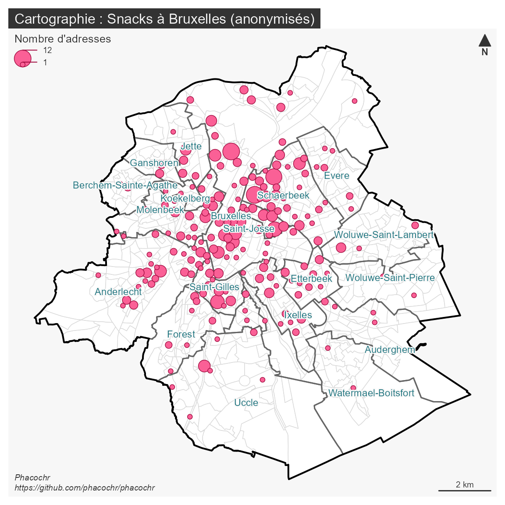

Géocodage au secteur statistique
phacochr a d’abord été pensé pour fonctionner en local :
il devait donc être léger, rapide et portable. Cette spécificité permet
notamment de géocoder des données sensibles qui ne peuvent pas être
envoyées sur un serveur via une API de géocodage. Des options
supplémentaires ont de ce fait été intégrées afin d’anonymiser les
données qui lui sont passées. Nous en montrons un exemple sur cette
page.
Partons des données
d’exemples snacks contenues dans phacochr,
et imaginons que nous voulons produire une information spatiale un tant
soi peu précise à partir de ces données, mais en ne donnant pas
d’indication de l’adresse. La fonction phaco_geocode() doit
alors prendre l’argument anonymous = TRUE (par défaut réglé
sur FALSE):
library(phacochrdev)
result_anonym <- phaco_geocode(data_to_geocode = snacks,
colonne_num = "num",
colonne_rue = "rue",
colonne_code_postal = "code_postal",
anonymous = TRUE)Cette option a la particularité de produire des coordonnées X-Y qui
ne sont pas celles de l’adresse, mais du centroïde du secteur
statistique où se trouve celle-ci (les données des entités
administratives - secteurs statistiques, communes… - sont quant à elles
ajoutées sans changement). Toutes les informations relatives à l’adresse
précise ne sont pas renseignées dans le résultat : la rue détectée, son
identifiant, les corrections orthographiques éventuellement apportées,
le numéro de la rue BeST avec lequel la jointure est réalisée, la langue
d’écriture de la rue… Les colonnes fournies en entrée sont également
supprimées : dans cet exemple, les colonnes de la base de données
originale contenant la rue et le numéro (rue et
num) ne sont pas reprises dans les résultats. Cette
suppression permet de produire rapidement un résultat géolocalisé au
niveau du secteur statistique, tout en étant anonymisé. Autrement dit,
cette option permet que la géolocalisation et l’adresse ne cohabitent
jamais dans le même fichier.
Cartographie anonymisée
Lorsque cette option est enclenchée, une nouvelle colonne
phaco_anonymous est ajoutée au résultat. La présence de
cette colonne indique à la fonction phaco_map_s() que
celle-ci doit changer sa manière de cartographier les résultats. Dans la
mesure où les adresses sont localisées au centroïde du secteur
statistique, les points se superposeraient dans la cartographie
classiquement prévue par phaco_map_s(). Dans le cas d’une
anonymisation, ce sont alors des cercles de taille proportionnelle au
nombre d’adresses localisées dans le secteur statistique qui sont
affichées. L’anonymisation n’empêche donc pas une cartographie
exploratoire rapide des résultats :
phaco_map_s(result_anonym$data_geocoded_sf,
title_carto = "Snacks à Bruxelles (anonymisés)")